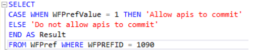

This property allows to configure if you want each workflow api that makes modifications to the database to perform a commit at the end. In the latest GXflow versions this property was deprecated and is not available in the GXflow Client Console but it is maintained for compatibility and can be consulted directly in the database with the following query: 
|